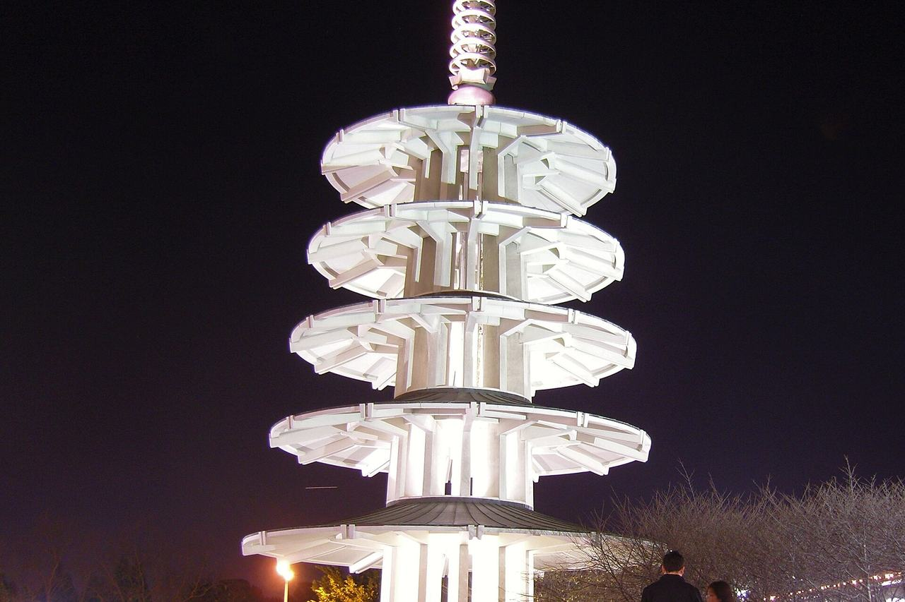

Japantown
The city's Japantown analysis neighborhood, the blocks around Post and Buchanan Streets. Coverage begins with the parcels the Office of the Assessor-Recorder photographed for tax assessment in 1961 and 1962.

Map
Named buildings and landmarks
-
1

-
2

-
3
-
4
-
5
Streets documented so far
- Buchanan Street
1 building, built 1959. - Divisadero Street
1 building, built 1948. - Fillmore Street
1 building, built 1880. - Geary Boulevard
1 building, built 1969. - Gough Street
1 building, built 1966. - Laguna Street
1 building, built 1960. - Post Street
5 buildings, built 1967–2009. - Scott Street
1 building, built 1900. - Steiner Street
1 building, built 1964. - Sutter Street
1 building, built 1975.
Parks and public spaces
- Hamilton Rec Center
Neighborhood park or playground, 3.6 acres. - Japantown Peace Plaza
Civic plaza or square, 34,848 sq ft.
Adjacent neighborhoods
These blocks were cut out of the Western Addition, which surrounds them east and south; Pacific Heights climbs the ridge north of Post Street.